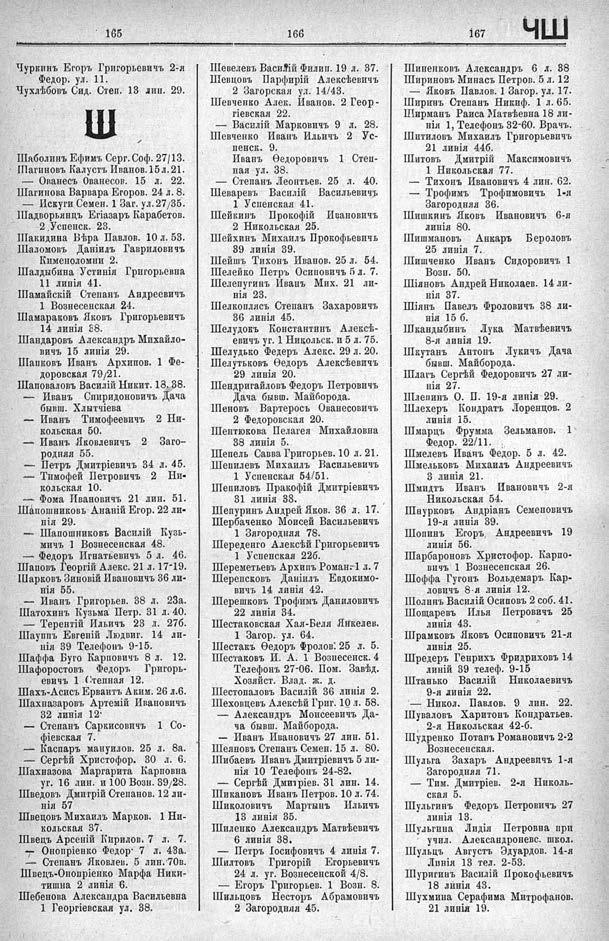

Лист источника 561
Скан

Распознанный текст
165
Чуркинъ Егоръ Григорьевичъ 2-я
Ѳедор. ул. 11.
Чухлѣбовъ Сид. Степ. 13 лин. 29.
Ш
Шаболинъ Ефимъ Серг. Соф. 27/13.
Шагиновъ Калустъ Иванов. 15 л. 21.
— Ованесъ Ованесов. 15 л. 22.
Шагинова Варвара Егоров. 24 л. 8.
— Искуги Семен. 1 Заг. ул. 27/35.
Шадворьянцъ Егіазаръ Карабетов.
2 Успенск. 23.
Шакидина Вѣра Павлов. 10 л. 53.
Шаломовъ Даніилъ Гавриловичъ
Кименоломни 2.
Шалдыбина Устинія Григорьевна
11 линія 41.
Шамайскій Степанъ Андреевичъ
1 Вознесенская 24.
Шамараковъ Яковъ Григорьевичъ
14 линія 38.
Шандаровъ Александръ Михайло-
вичъ 15 линія 29.
Шапковъ Иванъ Архипов. 1 Фе-
доровская 79/21.
Шаповаловъ Василій Никит. 13. 38.
— Иванъ Спиридоновичъ Дача
бывш. Хлытчіева
— Иванъ Тимофеевичъ 2 Ни-
кольская 50.
— Иванъ Яковлевичъ 2 Заго-
родная 55.
— Петръ Дмитріевичъ 34 л. 45.
— Тимофей Петровичъ 2 Ни-
кольская 10.
— Фома Ивановичъ 21 лин. 51.
Шапошниковъ Ананій Егор. 22 ли-
нія 29.
— Шапошниковъ Василій Кузь-
мичъ 1 Вознесенская 48.
— Федоръ Игнатьевичъ 5 л. 46.
Шаповъ Георгій Алекс. 21 л. 17-19.
Шарковъ Зиновій Ивановичъ 36 ли-
нія 55.
— Иванъ Григорьев. 38 л. 23а.
Шатохинъ Кузьма Петр. 31 л. 40.
— Терентій Ильичъ 23 л. 27б.
Шауппъ Евгеній Людвиг. 14 ли-
нія 39 Телефонъ 9-15.
Шаффа Буго Карповичъ 8 л. 12.
Шафоростовъ Федоръ Григорь-
евичъ 1 Степная 12.
Шахъ-Асисъ Ервантъ Аким. 26 л.6.
Шахназаровъ Артемій Ивановичъ
32 линія 12.
— Степанъ Саркисовичъ 1 Со-
фіевская 7.
— Каспаръ мануилов. 25 л. 8а.
— Сергѣй Христофор. 30 л. 6.
Шахназова Маргарита Карповна
уг. 16 лин. и 100 Возн. 39/28.
Шведовъ Дмитрій Степанов. 12 ли-
нія 57
Швецовъ Михаилъ Марков. 1 Ни-
кольская 37.
Швецъ Арсеній Кирилов. 7 л. 7.
— Онопріенко Федор 7 л. 43а.
— Степанъ Яковлев. 5 лин. 70в.
Швецъ-Онопріенко Марфа Ники-
тишна 2 линія 6.
Шебенова Александра Васильевна
1 Георгіевская ул. 38.
166
Шевелевъ Василій Филип. 19 л. 37.
Шевцовъ Парфирій Алексѣевичъ
2 Загорская ул. 14/43.
Шевченко Алек. Иванов. 2 Геор-
гіевская 22.
— Василій Марковичъ 9 л. 28.
Шевченко Иванъ Ильичъ 2 Ус-
пенск. 9.
Иванъ Ѳедоровичъ 1 Степ-
ная ул. 38.
— Степанъ Леонтьев. 25 л. 40.
Шеваревъ Василій Васильевичъ
1 Успенская 41.
Шейкинъ Прокофій Ивановичъ
2 Никольская 25.
Шейхинъ Михаилъ Прокофьевичъ
39 линія 39.
Шейшъ Тихонъ Иванов. 25 л. 54.
Шелейко Петръ Осиповичъ 5 л. 7.
Шелепугинъ Иванъ Мих. 21 ли-
нія 23.
Шелкопясъ Степанъ Захаровичъ
36 линія 45.
Шелудокъ Константинъ Алексѣ-
евичъ уг. 1 Никольск. и 5 л. 75.
Шелудько Федеръ Алекс. 29 л. 20.
Шелутьковъ Ѳедоръ Алексѣевичъ
29 линія 20.
Шендригайловъ Федоръ Петровичъ
Дача бывш. Майборода.
Шеновъ Вартерось Ованесовичъ
2 Федоровская 20.
Шентюкова Пелагея Михайловна
38 линія 5.
Шепель Савва Григорьев. 10 л. 21.
Шепилевъ Михаилъ Васильевичъ
1 Успенская 54/51.
Шепиловъ Пракофій Дмитріевичъ
31 линія 38.
Шепуринъ Андрей Яков. 36 л. 17.
Щербаченко Моисей Васильевичъ
1 Загородная 78.
Шереденго Алексѣй Григорьевичъ
1 Успенская 22б.
Шереметьевъ Архипъ Роман-1 л. 7
Шеренсковъ Даніилъ Евдокимо-
вичъ 14 линія 42.
Шерешковъ Трофимъ Даниловичъ
22 линія 34.
Шестаковская Хая-Беля Янкелев.
1 Загор.. ул. 64.
Шестакъ Ѳедоръ Фролов: 25 л. 5.
Шестаковъ И. А. 1 Вознесенск. 4
Телефонъ 27-06. Пом. Завѣд.
Хозяйст. Влад. ж. д.
Шестопаловъ Василій 36 линія 2.
Шеховцевъ Алексѣй Григ. 10 л. 58.
— Александръ Моисеевичъ Да-
ча бывш. Майборода.
— Иванъ Ивановичъ 27 лин. 51.
Шеяновъ Степанъ Семен. 15 л. 80.
Шибаевъ Иванъ Дмитріевичъ 5 ли-
нія 10 Телефонъ 24-82.
— Сергѣй Дмитріев. 31 лин. 14.
Шикановъ Иванъ Петров. 10 л. 74.
Шиколовичъ Мартынъ Ильичъ
13 линія 35.
Шиленко Александръ Матвѣевичъ
6 линія 38.
— Петръ Іосифовичъ 4 линія 7.
Шилтовъ Григорій Егорьевичъ
24 л. уг. Вознесенской 4/8.
— Егоръ Григорьев. 1 Возн. 8.
Шильцовъ Несторъ Абрамовичъ
2 Загородная 45.
167 ЧШ
Шиненковъ Александръ 6 л. 38
Шириновъ Минасъ Петров. 5 л. 12
— Яковъ Павлов. 1 Загор. ул. 17.
Ширинъ Степанъ Никиф. 1 л. 65.
Ширманъ Раиса Матвѣевна 18 ли-
нія 1, Телефонъ 32-60. Врачъ.
Шитиловъ Михаилъ Григорьевичъ
21 линія 44б.
Шитовъ Дмитрій Максимовичъ
1 Никольская 77.
— Тихонъ Ивановичъ 4 лин. 62.
— Трофимъ Трофимовичъ 1-я
Загородная 36.
Шишкинъ Яковъ Ивановичъ 6-я
линія 80.
Шишмановъ Анкаръ Бероловъ
25 линія 7.
Шишченко Иванъ Сидоровичъ 1
Возн. 50.
Шіяновъ Андрей Николаев. 14 ли-
нія 37.
Шіянъ Павелъ Фроловичъ 38 ли-
нія 15 б.
Шкандыбинъ Лука Матвѣевичъ
8-я линія 19.
Шкутанъ Антонъ Лукичъ Дача
бывш. Майборода.
Шлагъ Сергѣй Федоровичъ 27 ли-
нія 27.
Шлепинъ О. П. 19-я линія 29.
Шлехеръ Кондратъ Лоренцов. 2
линія 15.
Шмарцъ Фрумма Зельманов. 1
Федор. 22/11.
Шмелевъ Иванъ Федор. 5 л. 42.
Шмельковъ Михаилъ Андреевичъ
3 линія 21.
Шмидтъ Иванъ Ивановичъ 2-я
Никольская 54.
Шнурковъ Андріанъ Семеновичъ
19-я линія 39.
Шопинъ Егоръ, Андреевичъ 19
линія 56.
Шарбароновъ Христофор. Карпо-
вичъ 1 Вознесенская 26.
Шоффа Гугонъ Вольдемаръ Кар-
ловичъ 8-я линія 12.
Шолинъ Василій Осиповъ 2 соб. 41.
Шощаревъ Илья Петровичъ 25
линія 43.
Шрамковъ Яковъ Осиповичъ 21-я
линія 25.
Шредеръ Генрихъ Фридриховъ 14
линій 39 телеф. 9-15
Штанько Василій Николаевичъ
9-я линія 22.
— Никол. Павлов. 9 лин. 22.
Шуваловъ Харитонъ Кондратьев.
2-я Никольская 42-б.
Шудренко Потапъ Романовичъ 2-2
Вознесенская.
Шульга Захаръ Андреевичъ 1-я
Загородная 71.
— Тим. Дмитріев. 2-я Николь-
ская 5.
Шульгинъ Федоръ Петровичъ 27
линія 13.
Шульгина Лидія Петровна при
учил. Александроневс. школ.
Шульцъ Августъ Эдуардов. 14-я
Линія 13 тел. 2-53.
Шуригинъ Василій Прокофьевичъ
18 линія 43.
Шухмина Серафима Митрофанов.
21 линія 19.